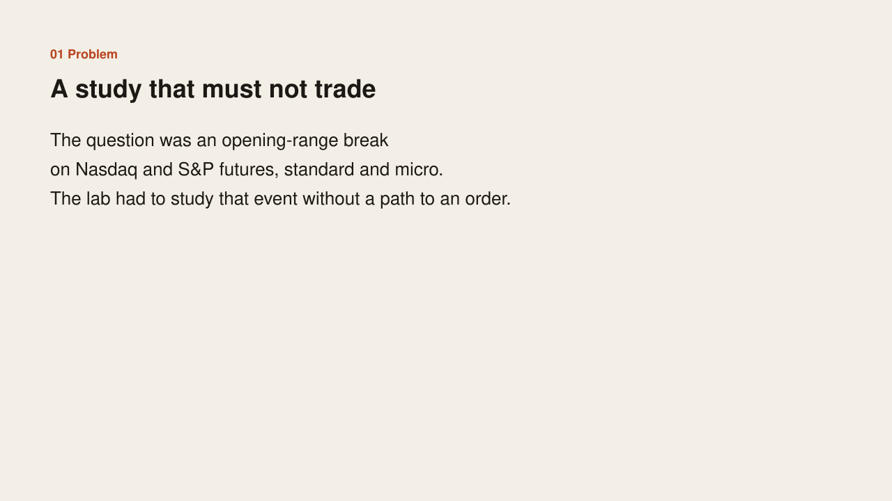
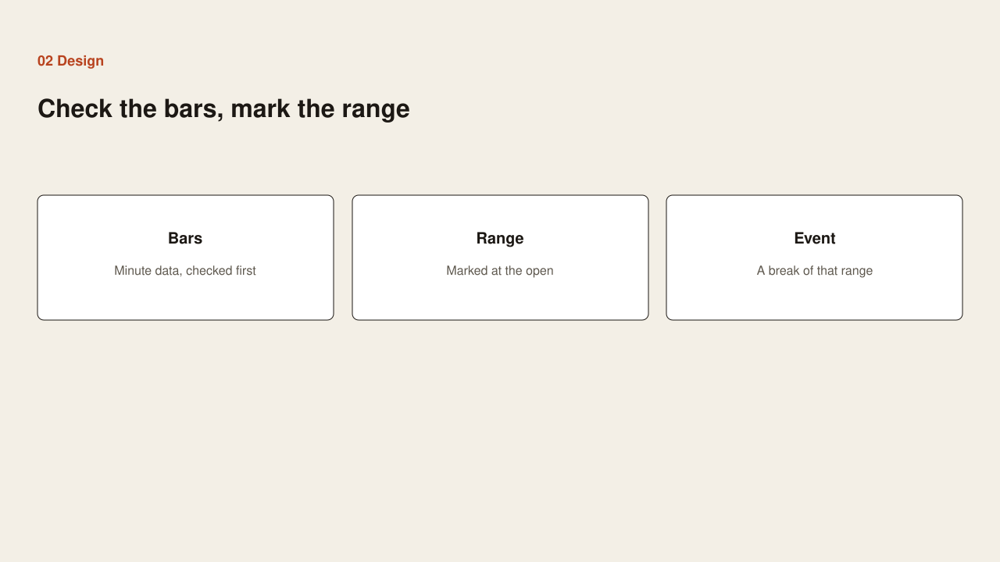
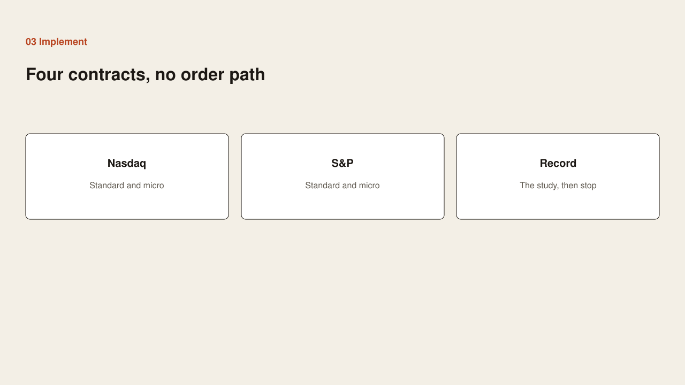
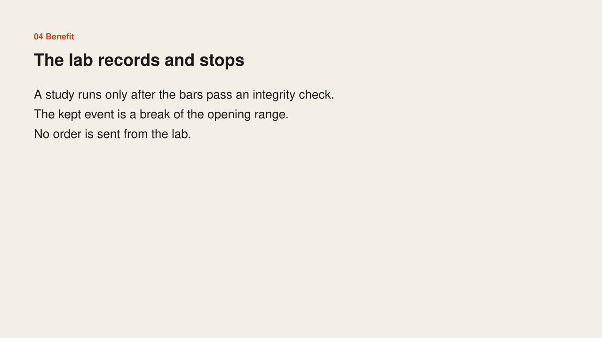

Problem
Problem

The question was an opening-range break on those four contracts. The lab had to study that event without a path to an order.
Case study
Problem

The question was an opening-range break on those four contracts. The lab had to study that event without a path to an order.
Design

Check minute bars before a study runs. Mark the opening range. Keep a break of that range as the event. Record the study and stop.
Implementation

Cover Nasdaq and S&P futures, each in a standard and a micro size. Run the study only after the integrity check. Do not attach an order path.
Benefit

A study runs only on bars that passed the check. The lab records the result. No order is sent. Entry, stop, and size are not in this note.